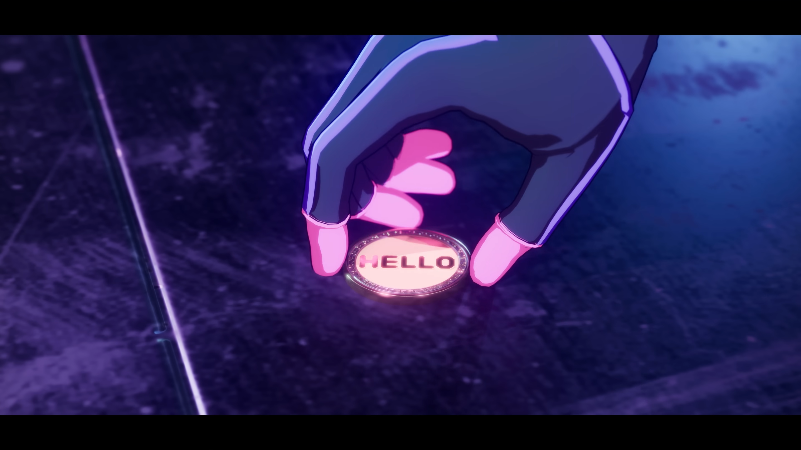
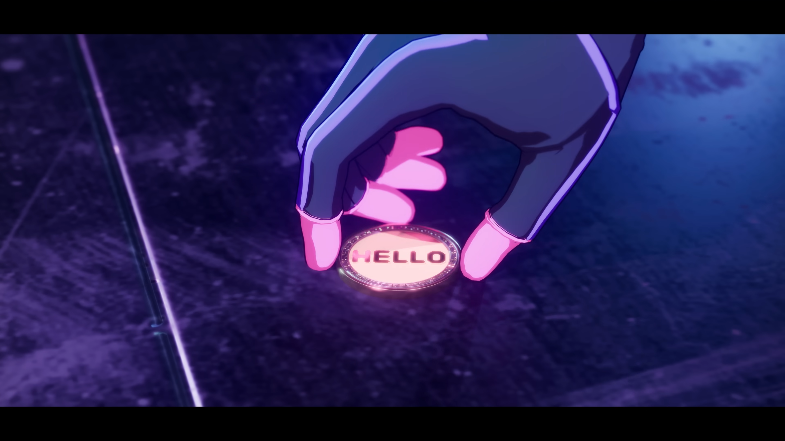
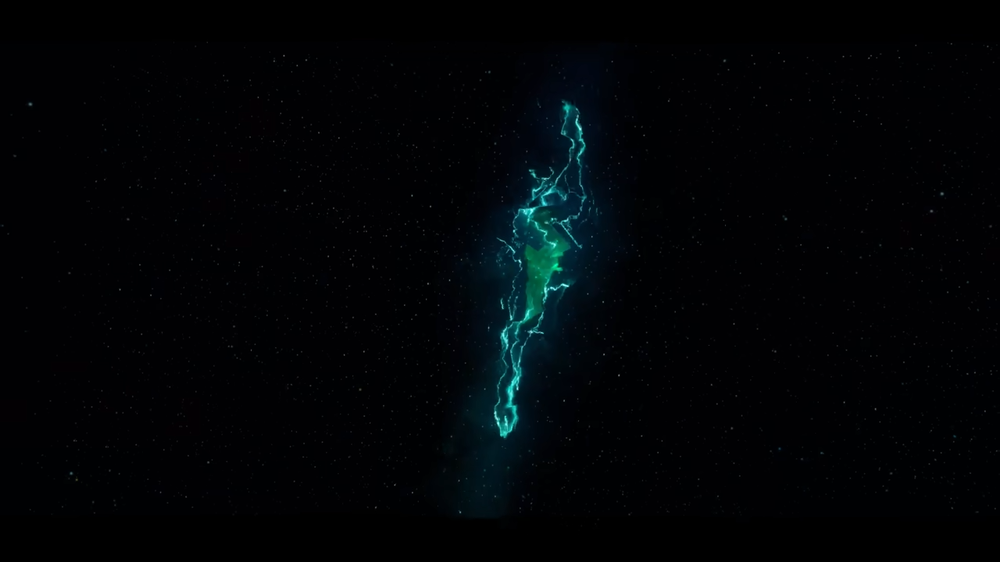
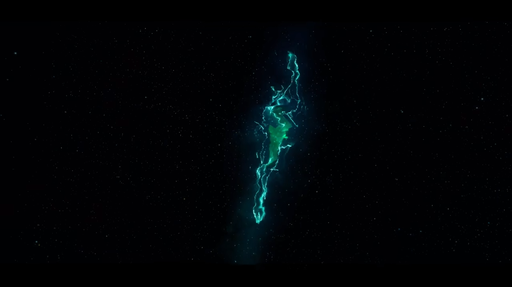
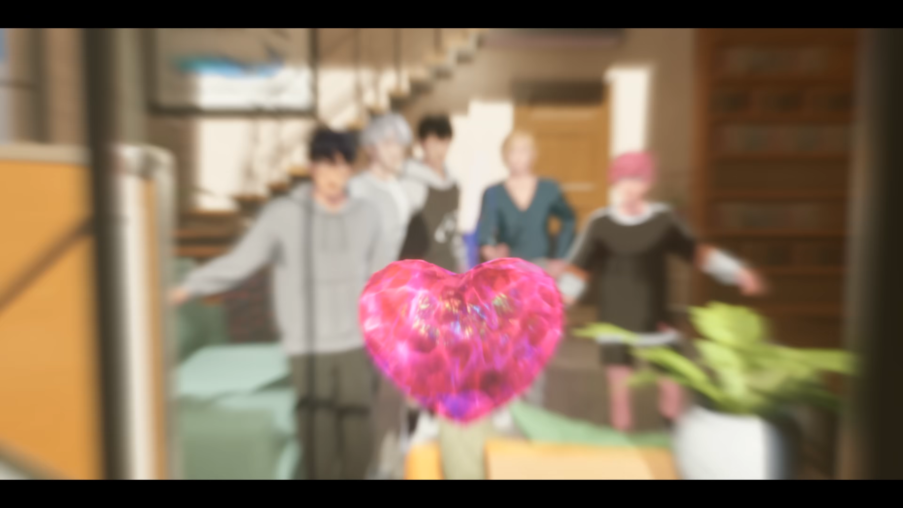
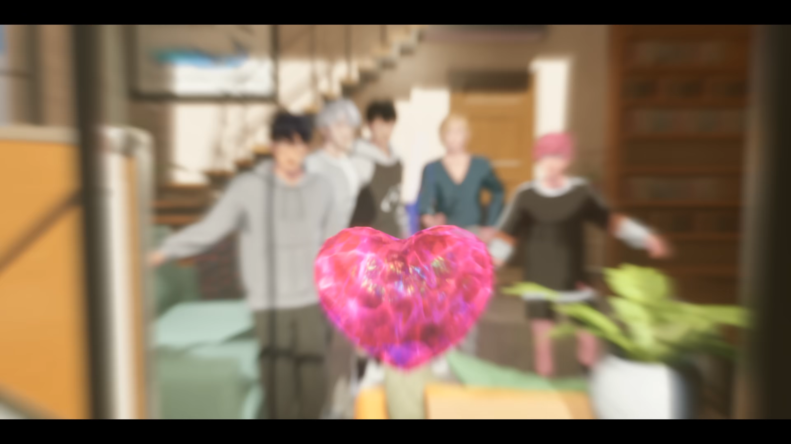

Members
YEJUN


NOAH


BAMBY


EUNHO


HAMIN


PLAVE is a digital KPOP boy group that exists beyond reality, blending music, Technology, and immersive storytelling.
Caelum is the world in which the members—Bamby, Noah, Yejun, Eunho—live. It's a virtual world powered by the creators from Terra (Earth), allowing the members of Plave to enter the realm of Asterum and interact with the real world.
All characters created on Earth exist in the form of a cube,
in the space of life (or what we know as a VitaexCub), which is the sky
of Asterum. If a certain character receives enough love in Terra due to
the releases or serialization of webtoons, the character's cube splits,
and a meteor is released, falling onto Caelum, where the character comes
to life in a Virtual World. If or when a character who is living in Caleum
loses their popularity, they disappear and return to the form of a cube and
then reside back in Asterum. [Revealed in Eunho's Birthday Kit QR code]

In the "Wait for You" MV, we see Yejun living in a place that looks like a Laboratory, Noah residing in a Magical Kingdom, and Bamby and Eunho seen in a cyber city, isolated with no one around. Later, we see in [Bamby's Birthday Kit QR code] a diary entry where the members of Plave's are revealed to be originally from 3 different webtoons that were discontinued, meaning they're on limited time before returning to their cube for.
Hamin's goal is to collect Star Shards(meteor debris), and with the help from Developer A (a former webtoon artist now programmer), help rescue the other members and gather them to Asterum through a rift, preventing their deletion and in hopes of gaining and receiving the love of Terran's (people on Earth) through music ultimatley gaining Eternal Life.
Before PLAVE’s Caligo Pt.1 comeback, a mysterious website, LMS (Lost Media Society), was discovered. It contained details about a now-forgotten webtoon artist, 3v3r, and a work titled The Sixth Track—not made by 3v3r, but by an impersonator. This webtoon featured characters resembling the PLAVE members and used the same art style seen in “The 6th Summer” MV. Fans speculated that the MV was a retelling of the webtoon. VLAST further fueled theories by releasing a "SongHwi Art High School" notice about summer safety, with QR codes seen in the MV posters leading to a terminal from Developer A. Fans decoded the terminal’s decrypted message to read: “Hello, I am Hamin”—sparking theories, especially since Hamin had not been publicly introduced before, he should have not been in both "The 6th Summer" MV and "The sixth Track" webtoon.
In the “Way 4 Luv” MV, we see a pile of letters from PLLI’s flood—what we now recognize as Asterum—bathed in bright colors and surrounded by whimsical buildings. A bulletin board appears, displaying a map, photos, and sticky notes outlining PLAVE’s mission to search for meteors or star shards, symbolic of PLLI’s love. According to a live stream by Noah, these meteors actually help the trees grow, which explains why much of the MV is set in a forest. During the video, Noah presents a small cube—visually similar to the core cube Hamin used to gather the members in “Wait for You”—which transforms into a glowing pink heart. This heart, representing PLLI’s love, becomes the guide for their journey.
In "Pump Up the Volume!" MV, we see the concept of radios, recordings, microphones, and channels, which are all tools that PLAVE uses to communicate with PLLI's.


Before the Caligo Pt 1 album was released, a special MV was released on Jan 24th, 2025 ( "Island" - which is a song in the album). During this week, the Planets Parade was happening, which is a rare celestial event where the planets align in the night sky, making the Earth in a straight line with Asterum. In the MV, we see the members staring out to the rift in the sky, which is now bigger than we ever have seen it; the rift growing is a symbol of PLLI's love growing for PLAVE, which fits with the lyrics of Island.
In the opening 20 seconds of the “Dash” MV, Caligo makes a direct appearance—marking their most visible threat yet. Revisiting the LMS (Lost Media Society) archives reveals more of Bamby and Eunho’s backstory through the unreleased webtoon Chroma Drift. Set in the chaotic city of Maracaya, Chroma Drift follows the spread of an illegal potion called Chroma. The case remained open for years with little known about its origins. Two rookie detectives—Bamby and Eunho—are assigned to investigate.

MaMiMuMo (also referred to as MMMMM) was revealed through a QR code in Noah’s birthday kit. Caelum had been running experiments to transmit Caligo soldiers into Asterum—where PLAVE resides—but repeated attempts failed. MMMM was the first partially successful transmission, but due to an incomplete data transfer, the result was unstable. MMMM now appears briefly and randomly across space and time, seemingly unbound by normal constraints. Eventually, Caelum perfected its transmission method, leading to Caligo soldiers successfully infiltrating Asterum, as seen in multiple MVs.
In “Dash” , when Eunho sees the first Caligo soldier, he runs to him, believing it to be Terry—his long-lost friend from Chroma Drift. However, Terry had been resurrected by Caelum and turned into a Caligo. Now void of his identity, Terry serves only Caelum’s will. Caligo’s mission: erase all unauthorized existence in Asterum, returning members to their original “cube” states. Asterum begins to crumble under Caligo’s attack. In a pivotal scene, Hamin is shown trapped in a digital, cube-like room, surrounded by monitors. This is speculated to be the central hub from which he summoned the other members into Asterum. As the battle escalates, Hamin fends off Caligo agents and sends a desperate SOS signal to Developer A (the creator, also known as 3v3r). Another version of the “Dash” MV shows the members performing atop a glowing square—what fans believe to be an SSD drive—suggesting they’ve stored their data selves temporarily, awaiting rescue or reboot.


 

 



 
